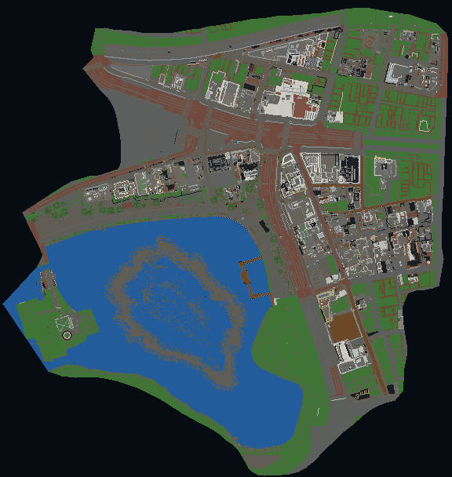

Minecraft clean top-down · MC X-Z 视图
x 向右 · z 向下 · 地理北向由配准变换计算
同一个人工点联动 Minecraft 顶视图、四向场景证据、OSM / Google / 实景参考和可选本地游戏控制。绿色 7 点是本次人工输出；蓝色 5 点是人工同名配准控制点，不混入 waypoint。

本地模式通过 URL 参数接入 loopback control 与 noVNC；静态线上页面不包含密码、RCON 地址或本地路径。传送只使用当前人工 waypoint 的复核坐标。
边界：唯一输出是 7 个在 clean Minecraft 世界里人工创建并复核的 waypoint。现实坐标已由 4 个同名控制点校准并通过 1 个留出点验证，但约 10.57 m 的留出误差仍不授予精确入口、路线证书、连续步行轨迹或 benchmark task 准入。